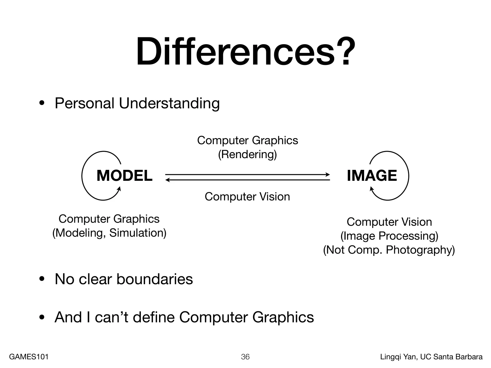
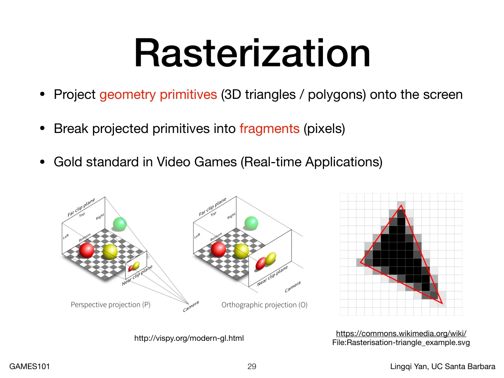
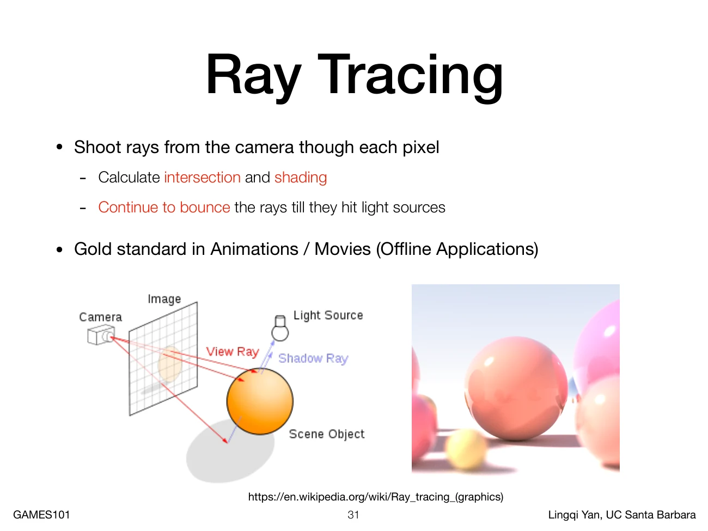

第 1 讲：课程总览——计算机图形学是什么、学什么、怎么学
用一讲时间建立对图形学全貌的认知：它解决什么问题、包含哪些核心模块、以及这门课的学习路线与工具准备。
◆ 学完这一讲，你应该能
能用自己的话说明计算机图形学（Computer Graphics）的研究对象与典型应用领域
能区分图形学与计算机视觉（Computer Vision）的问题方向差异
能说出本课程的四大核心模块：光栅化、曲线与网格、光线追踪、动画/模拟，并各举一个应用场景
能理解本课程不教图形 API 语法与建模软件操作，而是讲图形学原理
能完成课程环境准备：IDE 选择、作业提交方式、学术诚信要求
核心结论速记
计算机图形学是把模型（Model）变成图像（Image）的过程，与计算机视觉（图像→模型）方向相反。
图形学的典型应用包括：游戏、电影特效、动画、设计可视化、VR/AR、仿真、GUI、字体渲染等。
本课程四大核心模块：光栅化（实时渲染基石）、曲线与网格（几何表示）、光线追踪（离线渲染金标准）、动画/模拟（运动与物理）。
光栅化是游戏等实时应用的金标准；光线追踪是电影动画等离线应用的金标准。
本课程讲图形学原理，不教 OpenGL/DirectX/Vulkan 的 API 语法，也不教 Maya/Blender/Unity/UE 的操作。
图形学与计算机视觉没有绝对边界，但问题方向相反：图形学是模型→图像，视觉是图像→模型。
课程作业以 C++ 编程为主，提供代码骨架和虚拟机镜像，要求独立完成并遵守学术诚信。
推荐使用 Visual Studio 或 VS Code 等 IDE 进行 C++ 开发，避免使用纯文本编辑器。
011. 图形学到底在做什么：从模型到图像的转换
计算机图形学（Computer Graphics）的核心任务，可以用一句话概括：把对三维世界的描述（模型）变成一张二维图像。这里的“模型”可以是三角形网格、曲线曲面、粒子系统、甚至是一段物理仿真规则；而“图像”就是我们最终在屏幕上看到的像素阵列。
课件用一张对比图说明了图形学与计算机视觉（Computer Vision）的关系：
- 计算机图形学（渲染/建模/仿真）：输入是模型，输出是图像。例如游戏引擎根据场景中的几何、材质、灯光计算出每一帧画面。
- 计算机视觉（图像处理/理解）：输入是图像，输出是对图像内容的描述或重建的模型。例如人脸识别、语义分割、从照片重建三维模型。
课件特别强调：两者没有清晰的边界，很多技术是相通的（比如都用深度学习做渲染或重建），但问题方向相反。理解这一点，有助于你在后续学习中知道每个算法属于哪个阵营。
图形学的应用远不止游戏和电影。课件列举了：设计可视化（IKEA 产品目录大量使用渲染图）、科学/医学可视化、虚拟现实（VR）、增强现实（AR）、数字插画、物理仿真（如电影《星际穿越》中的黑洞渲染）、图形用户界面（GUI）、字体渲染（Typography）等。可以说，只要涉及“用计算生成图像”，就有图形学的身影。

常见坑
把图形学等同于“用 Unity/UE 做游戏”：图形学是底层原理，引擎只是工具；学完原理你才能理解引擎为什么这样设计。
混淆图形学与计算机视觉：两者方向相反，但技术有交叉；不要因为都处理图像就认为是一回事。
UE / Unity 落地
在 UE/Unity 中，你拖入一个模型、设置材质和灯光、点击播放，引擎内部就在做“模型→图像”的渲染；本课程后续会拆解这个黑盒。
022. 为什么值得学：智力挑战与技术挑战
课件给出了两个层面的理由。
根本性的智力挑战：图形学要创造并交互一个逼真的虚拟世界，这要求你理解物理世界的方方面面——光如何传播、材质如何反射、物体如何运动、人眼如何感知。同时还要发明新的计算方法、显示技术和交互技术。换句话说，图形学是“用计算模拟现实”的集大成者。
具体的技术挑战包括：
- 透视投影、曲线曲面的数学；
- 光照与着色的物理；
- 三维形状的表示与操作；
- 动画与仿真；
- 三维图形软件编程与硬件（GPU）知识。
这些挑战也正是本课程后续章节要逐一攻克的内容。课件最后幽默地补了一句：“忘掉前面那些理由吧，计算机图形学很酷（AWESOME）！”——这确实也是很多从业者的真实动力。
对于自学者来说，理解“为什么学”很重要：图形学知识点多且杂，如果没有一个整体目标（比如做出自己的渲染器或游戏画面），很容易迷失在公式里。建议你始终带着“我要让屏幕上出现想要的画面”这个目标去学。
常见坑
认为图形学只是数学推导，忽略工程实现：图形学是理论与实践并重的学科，只看不写代码很难真正掌握。
033. 课程四大模块：光栅化、几何、光线追踪、动画仿真
本课程主要覆盖四个部分，它们构成了现代图形学的骨架。
（1）光栅化（Rasterization） 把三维几何图元（主要是三角形）投影到屏幕上，再把投影后的图元拆成片元（fragment，可以理解为候选像素），最后决定每个像素的颜色。课件称光栅化是“视频游戏等实时应用的金标准”，因为它的计算模式非常适合 GPU 并行，能跑到每秒几十到几百帧。
（2）曲线与网格（Curves and Meshes） 研究如何在计算机中表示几何形状。课件举了两个例子：贝塞尔曲线（Bezier Curve）和 Catmull-Clark 细分曲面。这是建模、动画、CAD 的基础。
（3）光线追踪（Ray Tracing） 从相机向每个像素发射光线，计算光线与场景的交点及着色，并让光线继续反弹直到击中光源。课件称光线追踪是“动画/电影等离线应用的金标准”，因为它能自然地模拟反射、折射、软阴影等全局光照效果，但计算量大，通常一帧要渲染几分钟到几小时。
（4）动画与仿真（Animation / Simulation） 研究物体如何运动。课件提到了关键帧动画（Keyframe Animation）和质点-弹簧系统（Mass-spring System）。这是角色动画、布料、流体等效果的基础。
这四个模块不是孤立的：一个完整的渲染器通常同时包含几何表示、光栅化或光线追踪、以及动画更新。学习时建议先分别掌握，再思考它们如何组合。


常见坑
把光栅化和光线追踪对立起来：它们只是两种不同的可见性/着色求解策略，现代引擎（如 UE5 Lumen）会混合使用多种技术。
认为曲线与网格只是建模软件的事：游戏引擎中的样条线、地形、动画曲线都依赖这些数学表示。
UE / Unity 落地
UE 的 Nanite 虚拟几何体、Lumen 全局光照，底层仍然基于光栅化管线，但混合了光线追踪/距离场等技术；学习本课程后你能理解这些名词背后的原理。
Unity 的 Shader Graph 和 UE 的材质编辑器最终都会编译成光栅化管线的着色器代码；本课程的光栅化与着色章节是理解它们的基础。
044. 这门课不教什么：API、引擎与建模软件
课件专门用几页澄清了课程的边界，这对自学者尤其重要，可以避免走弯路。
不教图形 API 的语法：OpenGL、DirectX、Vulkan 是图形 API，本课程不教如何调用它们。课件说：“我们学的是图形学，不是图形 API！”并承诺学完本课程后，你可以自己学会这些 API。为什么？因为 API 只是工具，底层原理（光栅化、着色、纹理、混合）是相通的；理解了原理，查文档就能用 API 实现。
不教建模软件和引擎操作：Maya、3ds Max、Blender 的建模，以及 Unity、Unreal Engine 的游戏开发，都不在本课程范围内。课件甚至给出了“去哪里学”的提示（网上教程）。这不是说这些工具不重要，而是说它们属于工程实践，可以在掌握原理后自学。
不教计算机视觉/深度学习：语义分割、GAN 等话题属于另一门课。课件再次强调图形学与视觉的区别。
那么这门课教什么？教的是图形学的核心原理：变换、光栅化、着色、几何、光线追踪、动画仿真。这些原理是跨 API、跨引擎的。学完之后，你再看 UE 的渲染管线文档或 Unity 的 Shader 代码，会更容易理解“为什么是这样”。
对于以独立开发 3A 游戏为目标的读者，这一页尤其重要：你需要的是“原理+引擎实践”两条腿走路。本课程负责原理，引擎操作可以并行自学。
常见坑
花大量时间纠结 API 细节而忽略原理：API 更新很快，原理相对稳定；先学原理，API 用时再查。
认为学完本课程就能直接做 3A 游戏：课程不教引擎工程、美术管线、性能优化等实践内容，需要额外学习。
UE / Unity 落地
UE 的渲染管线文档、Unity 的 Built-in/URP/HDRP 管线对比，都可以在本课程找到对应的原理章节；建议学完相应章节后再去读引擎文档。
055. 课程安排与学习工具：作业、IDE 与学术诚信
课件最后介绍了课程的后勤信息，对自学者也有参考价值。
课程网站：所有信息（大纲、幻灯片、阅读材料）都在课程主页上，建议收藏。
参考书：没有强制教材，但强烈推荐 Steve Marschner 和 Peter Shirley 的《Fundamentals of Computer Graphics》（第 3 版或更新）。这本书覆盖了本课程的大部分主题，可以作为查阅手册。
作业：以编程任务为主，提供代码骨架和虚拟机镜像，语言是 C++，每周作业代码量通常不大。提交有严格截止时间。没有考试，取而代之的是课程项目/期末项目，题目自选，优秀作品会在线展示。
IDE 建议：课件推荐 Visual Studio（Windows）或 Visual Studio Code（跨平台），个人推荐 Qt Creator。不推荐 CLion、Eclipse（对 C++ 支持不够好），更不推荐 Sublime Text、Vim/Emacs（它们不是 IDE，缺乏项目解析和补全）。对于自学者，建议直接用 VS Code + C++ 插件，或者 Visual Studio Community 版。
学术诚信：常规作业必须独立完成，不能复制任何来源的代码；不能把作业代码公开到 GitHub 等平台；不能在线发布解答。讨论和解释是允许的。这一点对自学者同样重要：抄代码学不到东西，独立实现才能形成能力。
虽然本课程是 2020 年的，但上述工具建议至今仍然适用。自学者可以跳过提交作业的环节，但强烈建议自己完成编程练习。
补充说明
课程网站链接：http://www.cs.ucsb.edu/~lingqi/teaching/games101.html
常见坑
使用 Vim/Emacs 写 C++ 大作业：缺乏代码补全和项目索引，效率低；建议用 VS Code 或 Visual Studio。
把作业代码公开到 GitHub：违反学术诚信，也可能影响后续学习者；练习代码建议私有保存。
UE / Unity 落地
UE 的 C++ 项目通常用 Visual Studio 或 Rider 开发；Unity 的 C# 脚本常用 VS Code 或 Rider。本课程的 C++ 编程经验对后续 UE C++ 开发有直接帮助。
引擎对照表
| 概念 / 效果 | Unreal Engine | Unity |
|---|---|---|
模型→图像的渲染 | 渲染管线（Render Pipeline）将场景渲染到屏幕 | 渲染管线（Built-in/URP/HDRP）将场景渲染到屏幕 |
光栅化 | 默认的实时渲染路径，GPU 光栅化三角形 | 默认的实时渲染路径，GPU 光栅化三角形 |
光线追踪 | Lumen 的硬件光追、路径追踪器（Path Tracer） | HDRP 的 Ray Tracing、路径追踪器 |
曲线与网格 | 样条线（Spline）、静态网格体（Static Mesh）、Nanite | 样条线（Spline）、Mesh、ProBuilder |
动画与仿真 | 动画蓝图（Animation Blueprint）、Chaos 物理 | Animator、物理引擎（PhysX） |
着色器编程 | 材质编辑器（Material Editor）生成 HLSL | Shader Graph 或手写 HLSL/ShaderLab |
术语双语表
| English | 中文 | 说明 |
|---|---|---|
| Computer Graphics | 计算机图形学 | 研究如何用计算机生成图像，核心是模型→图像。 |
| Computer Vision | 计算机视觉 | 研究如何让计算机理解图像，核心是图像→模型/描述。 |
| Rasterization | 光栅化 | 将几何图元投影并拆分成像素/片元的过程，实时渲染的基石。 |
| Ray Tracing | 光线追踪 | 从相机发射光线并递归计算交点与着色，离线渲染的金标准。 |
| Bezier Curve | 贝塞尔曲线 | 由控制点定义的光滑曲线，广泛用于建模和动画。 |
| Catmull-Clark Subdivision | Catmull-Clark 细分 | 一种曲面细分算法，通过迭代细分多边形网格得到光滑曲面。 |
| Mass-spring System | 质点-弹簧系统 | 用质点和弹簧模拟布料、软体等物理动画的方法。 |
| Fragment | 片元 | 光栅化后生成的候选像素，携带深度、颜色等属性。 |
| IDE | 集成开发环境 | 提供代码编辑、编译、调试等功能的软件，如 Visual Studio。 |
课后练习
01 用自己的话解释计算机图形学与计算机视觉的区别，并各举一个应用例子。
查看答案
提示：
从输入输出方向思考。
计算机图形学是模型→图像，例如游戏引擎根据三维场景渲染出一帧画面；计算机视觉是图像→模型/描述，例如人脸识别从照片中识别出人脸位置。两者方向相反，但技术有交叉。
02 本课程的四大核心模块是什么？分别对应哪种典型应用（实时/离线）？
查看答案
提示：
参考课件目录。
光栅化（实时应用，如游戏）、曲线与网格（几何表示，建模/动画）、光线追踪（离线应用，如电影）、动画与仿真（运动与物理，如角色动画）。
03 为什么本课程不教 OpenGL/DirectX/Vulkan 的 API 语法？学完本课程后你能做到什么？
查看答案
提示：
从原理与工具的关系回答。
因为 API 只是工具，底层图形学原理（光栅化、着色、几何等）是相通的；掌握原理后，查文档就能自学任何图形 API。学完本课程后，你能理解渲染管线背后的原理，并具备自学 API 和引擎的能力。
04 假设你要自学 UE 的材质系统，本课程哪些模块会直接帮助到你？请至少列出两个。
查看答案
提示：
思考材质编辑器最终生成什么。
光栅化与着色模块：理解三角形如何变成像素、着色模型如何计算颜色；几何模块：理解网格与法线；光线追踪模块：理解全局光照。这些原理能帮助你理解材质节点背后的 HLSL 代码和渲染管线。
05 课件推荐使用 IDE 而不是纯文本编辑器，为什么？请结合 C++ 项目开发说明。
查看答案
提示：
考虑代码补全、项目解析、调试。
IDE 能解析整个项目，提供语法高亮、代码补全、成员函数提示、跳转定义、调试等功能，大幅提高开发效率；纯文本编辑器缺乏这些功能，容易出错且效率低。对于 C++ 大作业，推荐 Visual Studio 或 VS Code。